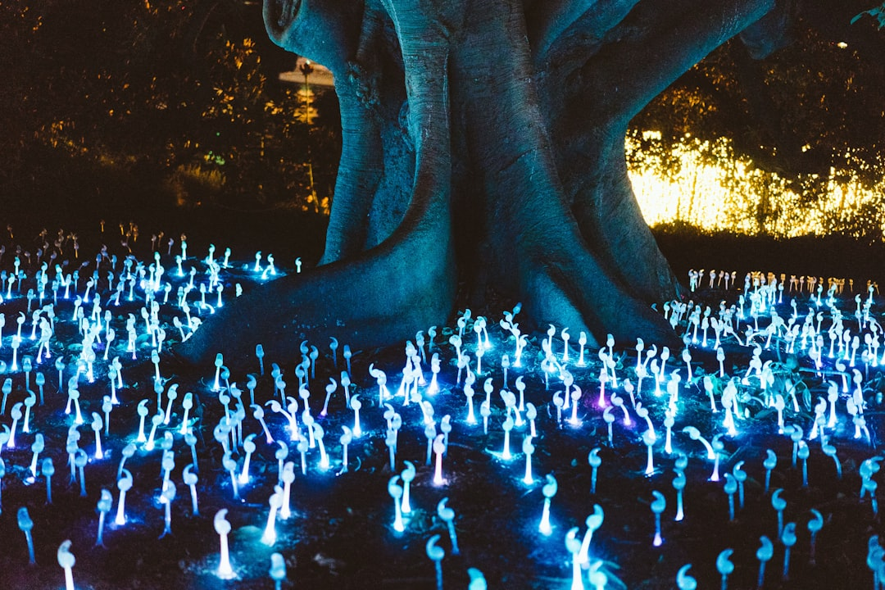

News
Legal Status of Magic Mushrooms in Canada
Legal Status of Magic Mushrooms in Canada
Current Legal Framework for Magic Mushrooms
Provincial Differences in Legal Status
Implications of Legalization Movements
Online Purchasing of Magic Mushrooms in Canada
Online Purchasing of Magic Mushrooms in Canada
Reputable Online Vendors in Canada
Safety and Quality Assurance in Online Purchases
Payment and Delivery Options for Online Orders
Effects and Uses of Magic Mushrooms
Effects and Uses of Magic Mushrooms
Psychedelic Effects and Mental Health Benefits
Microdosing Practices and Guidelines
Potential Risks and Safety Precautions
About Us

A Guide to Safely Purchasing Magic Mushrooms Online in Canada
Jun 25, 2025
In recent years, the conversation surrounding magic mushrooms has shifted dramatically.. Where once they were cloaked in mystery and taboo, today they are increasingly recognized for their potential therapeutic benefits and personal development opportunities.
Exploring the Health Benefits and Risks of Magic Mushrooms
Jun 25, 2025
Exploring the Health Benefits and Risks of Magic Mushrooms Magic mushrooms, known scientifically as psilocybin mushrooms, have captivated human curiosity for centuries.. Traditionally used in various indigenous cultures for spiritual and healing purposes, these fungi have recently gained attention in modern medicine for their potential health benefits.
How Microdosing with Magic Mushrooms is Gaining Popularity in Canada
Jun 25, 2025
How Microdosing with Magic Mushrooms is Gaining Popularity in Canada In recent years, the concept of microdosing—consuming very small, sub-perceptual amounts of psychedelic substances—has been gaining significant traction across the globe.. Among these substances, magic mushrooms, or psilocybin mushrooms, have emerged as a popular choice for those seeking mental health benefits without the intense experiences typically associated with psychedelics.
How to Safely Buy and Experience Magic Mushrooms in Canada
Jun 25, 2025
Navigating the Psychedelic Frontier: How to Safely Buy and Experience Magic Mushrooms in Canada Magic mushrooms, known scientifically as psilocybin mushrooms, have been used for centuries in various cultures for their mind-altering effects and potential therapeutic benefits.. In recent years, Canada has seen a surge of interest in these psychedelic fungi, partly due to a growing body of research suggesting their positive impact on mental health.
How to Start Your Psychedelic Journey with Magic Mushrooms from Canada
Jun 25, 2025
Embarking on a psychedelic journey with magic mushrooms can be a profound and transformative experience.. For many, this voyage offers an opportunity to explore the depths of consciousness, gain new perspectives, and connect more deeply with oneself and the universe.
How to Transform Your Mindset with Magic Mushrooms: A Canadian Guide
Jun 25, 2025
How to Transform Your Mindset with Magic Mushrooms: A Canadian Guide In recent years, theres been a resurgence of interest in the use of magic mushrooms, or psilocybin mushrooms, as a tool for personal transformation.. This ancient practice, rooted in indigenous traditions around the world, is gaining new attention for its potential to shift perspectives and catalyze deep personal growth.
How to Unlock the Mystical World of Magic Mushrooms in Canada
Jun 25, 2025
Unlocking the Mystical World of Magic Mushrooms in Canada In recent years, the conversation surrounding magic mushrooms has shifted from hushed whispers to mainstream dialogue.. The growing interest in these natural wonders is not merely a trend but an exploration into ancient wisdom and contemporary science.
The Legal Landscape of Magic Mushrooms in Canada: What You Need to Know
Jun 25, 2025
The Legal Landscape of Magic Mushrooms in Canada: What You Need to Know In recent years, the conversation surrounding psychedelics has shifted dramatically.. Once dismissed as dangerous and illicit substances, these compounds are now at the forefront of groundbreaking research into mental health treatment.
The Role of Magic Mushrooms in Mental Health Treatment: A Canadian Perspective
Jun 25, 2025
The Role of Magic Mushrooms in Mental Health Treatment: A Canadian Perspective Introduction In recent years, the conversation around mental health treatment has begun to shift significantly.. One of the most intriguing developments is the renewed interest in the use of psychedelics, particularly psilocybin, the active compound found in magic mushrooms.
Understanding the Psychedelic Experience: What to Expect from Magic Mushrooms
Jun 25, 2025
Understanding the Psychedelic Experience: What to Expect from Magic Mushrooms The allure of magic mushrooms, a term colloquially used to describe fungi containing the psychoactive compound psilocybin, has captivated human curiosity for centuries.. From ancient rituals to modern therapeutic explorations, these naturally occurring psychedelics offer a profound journey into the mind.
What is Required to Purchase Magic Mushrooms Legally Online in Canada?
Jun 25, 2025
Purchasing magic mushrooms legally online in Canada is an intriguing topic that opens up discussions on legality, safety, and the evolving landscape of psychedelic substances.. As the world gradually shifts its perception of psychedelics from taboo to therapeutic, understanding the legal framework surrounding these substances becomes crucial for potential consumers. In Canada, the legal status of magic mushrooms—or more specifically, psilocybin and psilocin (the psychoactive compounds found in these fungi)—is a complex subject.
What is the Best Website for Ordering Magic Mushrooms in Canada?
Jun 25, 2025
Exploring the Best Options for Ordering Magic Mushrooms in Canada In recent years, the conversation surrounding psychedelics has shifted significantly.. Once shrouded in stigma and illegality, substances like magic mushrooms are now being recognized for their potential therapeutic benefits.
What is the Difference Between Types of Magic Mushrooms Available Online in Canada?
Jun 25, 2025
Magic mushrooms, scientifically recognized as part of the genus Psilocybe, have gained significant attention in recent years for their potential therapeutic benefits and recreational use.. In Canada, where the legal landscape around psychedelic substances is gradually evolving, various types of magic mushrooms are increasingly available online.
What is the Experience of Using Magic Mushrooms from Canadian Online Shops?
Jun 25, 2025
The Experience of Using Magic Mushrooms from Canadian Online Shops In recent years, the conversation surrounding psychedelics has evolved significantly.. Once taboo and relegated to the fringes of society, substances like magic mushrooms are now showing promise in therapeutic settings and gaining traction among individuals seeking alternatives for personal growth and mental health.
What is the Future of Online Sales for Magic Mushrooms in Canada?
Jun 25, 2025
The Future of Online Sales for Magic Mushrooms in Canada: A Promising Horizon In recent years, the conversation surrounding psychedelics, particularly magic mushrooms, has shifted dramatically.. Once relegated to the fringes of society, these substances are now increasingly recognized for their potential therapeutic benefits and are gaining mainstream acceptance.
What is the Legal Status of Magic Mushrooms in Canada?
Jun 25, 2025
Magic mushrooms, known scientifically as psilocybin mushrooms, have long intrigued societies around the globe.. Their capacity to alter consciousness and provoke profound psychological experiences has made them both revered and controversial.